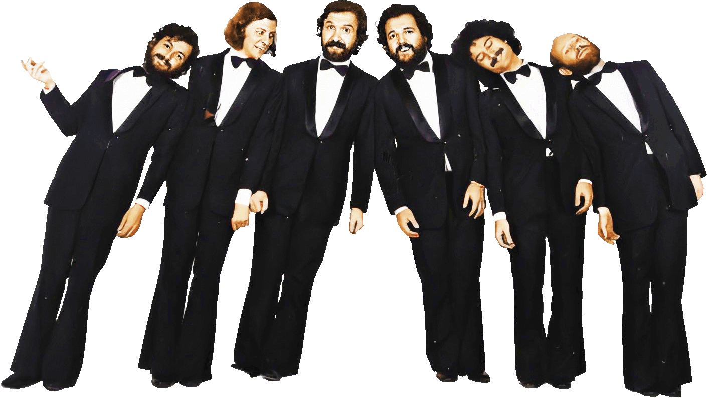
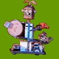

La página de Les Luthiers de Patrick
La página de Les Luthiers de Patrick
Última Actualización
Les Luthiers tienen actuaciones previstas en Argentina (Buenos Aires, Salta y Tucumán) y España (Murcia, Valencia, Zaragoza y Palma de Mallorca); consulta el Calendario.



EDITORIAL
LA WEB DECANA SOBRE LES LUTHIERS
28 AÑOS
(1998 - 2026)
Esta NO ES UNA PÁGINA OFICIAL.
Cualquier error u omisión debe ser achacado al autor. Agradezco a cuantos me han ayudado a reunir todo el material gráfico y sonoro. Son bienvenidas las críticas y sugerencias.